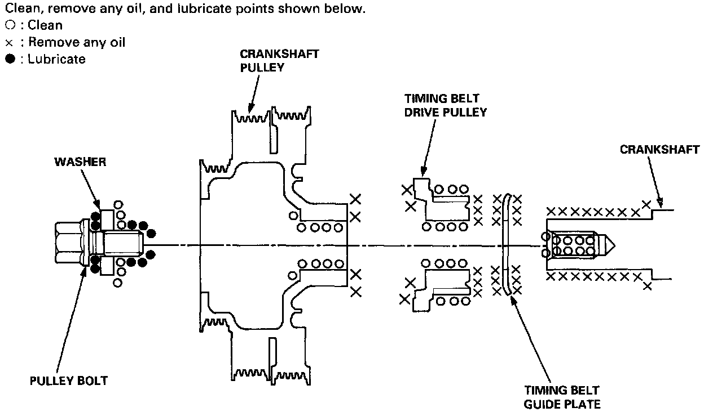
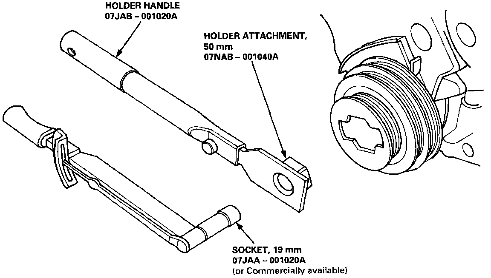

Harmonic Balancer - Crankshaft Pulley: Service and Repair

Crankshaft pulley bolt size and torque value:
16 x 1.5 mm
245 Nm (181 Ft. lbs.)

NOTE:
- Do not use an impact wrench when installing.
- Align the thumbscrew in the holder handle with the hole in the holder attachment.